GPG - 101 - How to get your first GPG Keys

Installing GPG
The steps to install GPG on your computer are the following:
- Download the necessary software for your Operating System at:
GPG4Win Kleopatra
Generating your own new GPG Keys
Generating your own new GPG Keys is extremely easy. Here is a series of screenshots of the process using the Kleopatra application for Windows.
(1)
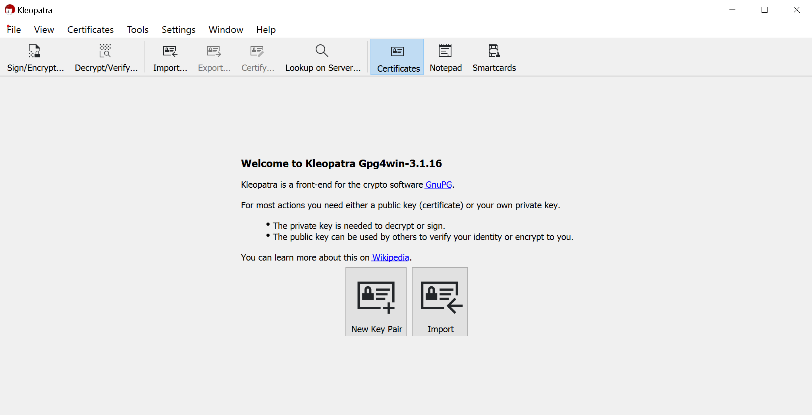
(2)

It is extremely important to use a passphrase and more important if you use it to actually write it down somewhere so that you never loose it.
(3)

(4)
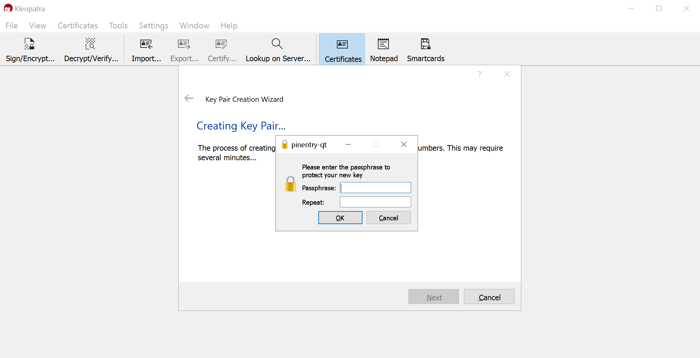
(5)

(6)

(7)
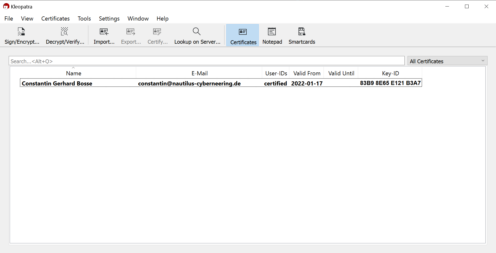
(8)

(9)

(10)
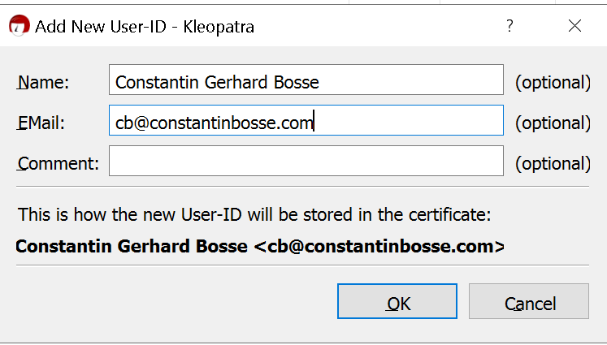
(11)
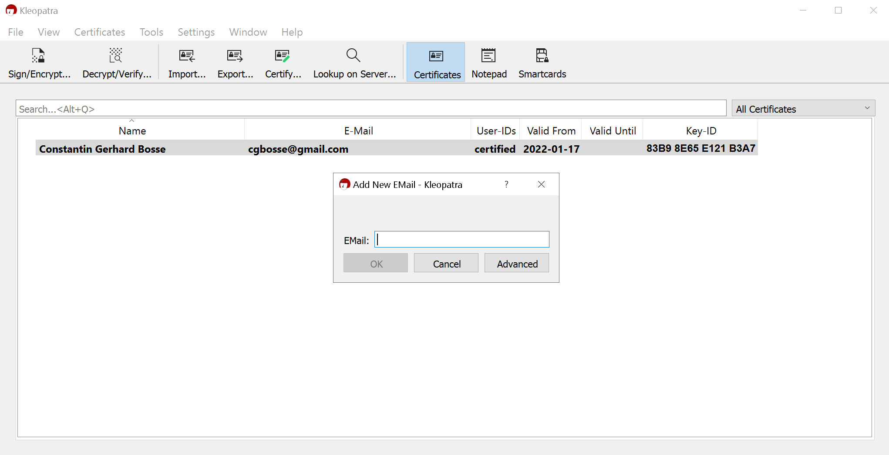
Creating a Revocation Certificate
(1)

(2)
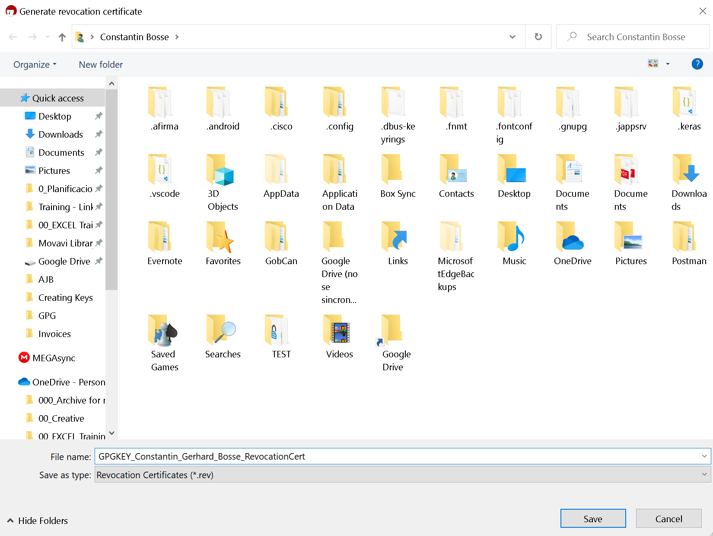
(3)
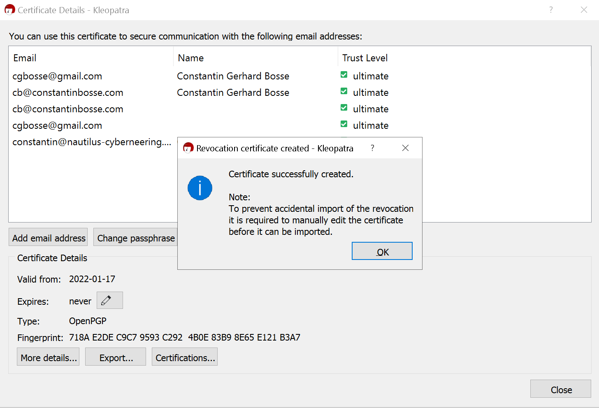
(4)

Sample Public GPG Key
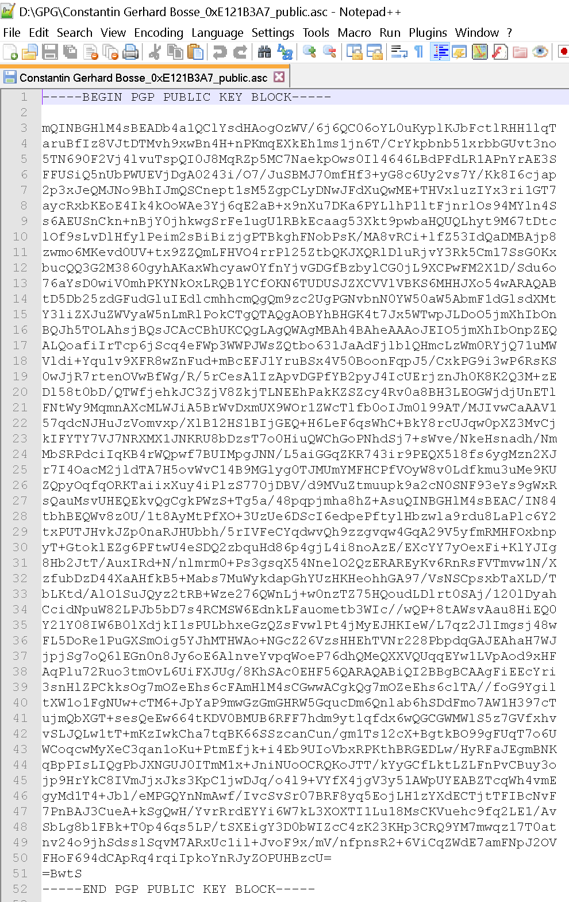
Command Line or Terminal
In order to generate your new keys you have two options:
- Running the default setup.
- Running the full setup which lets you define some additional specifications such as the encryption level.
Default Setup
Open the command line as an admin and type:
```terminal
gpg --gen-keys
```
(1)
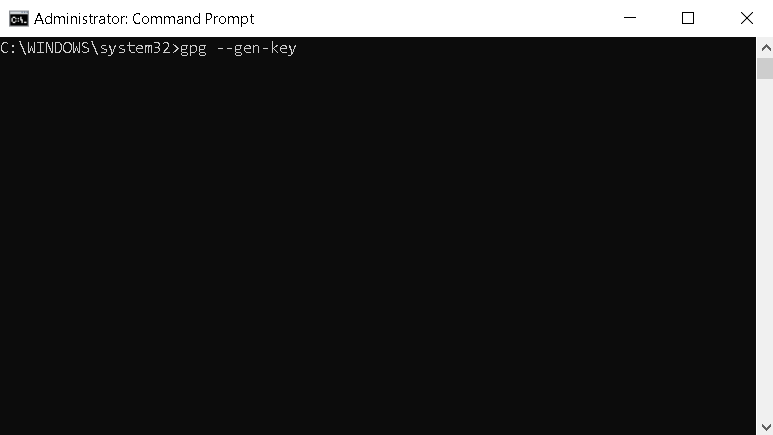
(2)

(3)

(4)
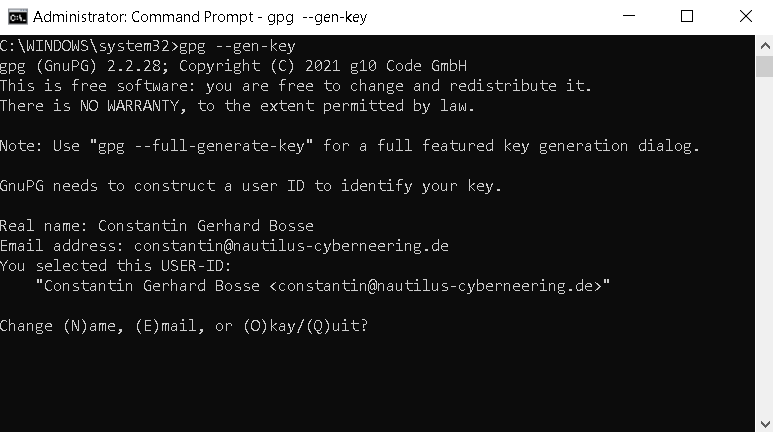
(5)

(6)
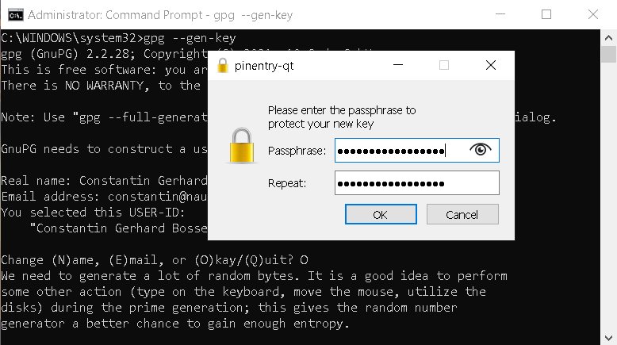
Once this has been done the keys get generated with the default encryption level of 3072.
Full Setup
This option lets you:
- Define the encryption level up to 4096.
- Insert a comment.
- Define the key type (RSA, DSA, Elgamal, etc.).
It automatically generates also a revocation certificate at the default location which is indicated at the final step.
Open the command line as an admin and type:
```terminal
gpg --full-generate-keys
```
Defining the key type
(1)

(2)

Defining the encryption level
(3)

(4)

Defining the expiration date
(5)
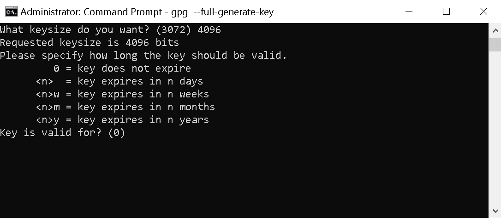
(6)

(7)

Defining the user ID to identify the key
(8)

(9)

(10)

(11)

Final screen with revocation certificate location
(12)
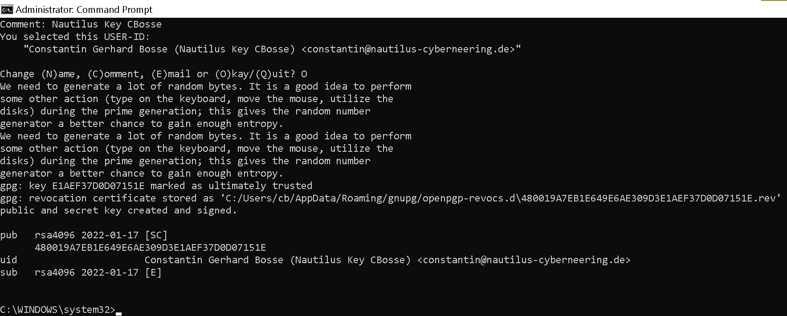